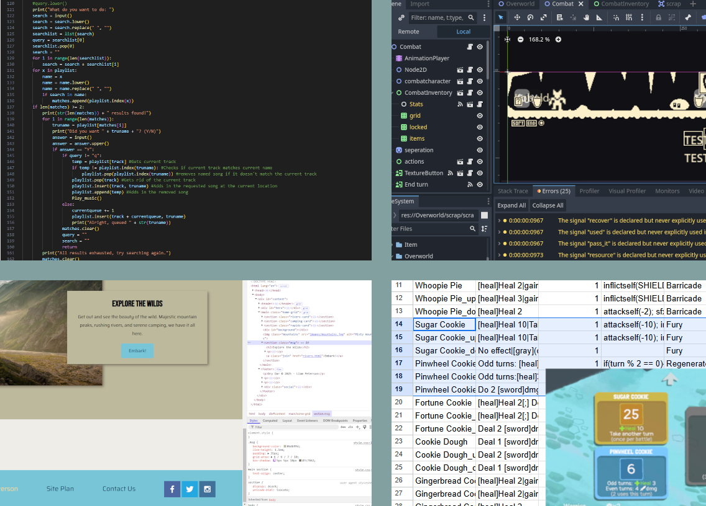

Hello! I'm Liam Peterson. I'm a creator who's currently studying at BYUI and majoring in Computer Science, and I love making things. While I played with legos and different coloring things as a kid, my big dive into creation was a robotics competition team in middle school
My team made it to the Vex IQ Worlds Competition, and it's where I especially learned how to code and work with a team. Since then, my mediums have expanded. I did another, more advanced, robotics competition, learning how to machine parts, deal with more mechanical aspects, and learn a more modern programming language. However, that team was cut short by Covid, leaving me with a lot of free time and energy.

Since then, I've learned game development within the Godot game engine, learned photoshop and pixel art, made a music player in Python script, modded games using CSV files and learned more about that as a whole, 3D printed personal projects and learned how to use Fusion360, and learned website development and design, as shown by this website. In 2023 I started my two year religious mission for The Church of Jesus Christ of Latter Day Saints in Tacoma Washington. I was able to learn a lot about myself as a person, how to work with others, and how to work hard. We weren't allowed computers though, so my creative endeavors pivoted to traditional art. Since then, I got home, and began studying computer science! My skills are still growing, and I'm loving making new things

Learning things is one of my best attributes. If given a challenge, I'll do my best to learn and overcome it, accomplishing and growing in whatever way is needed of me. I’m able to work well in a team, fulfilling a niche best, but able to work in multiple aspects. I do my best to meet expectations, and face each problem on its own, even if it’s not in the most typical manner.
The Showcase
However, one of my least favorite things is writing about myself, so why not go see some of my public personal projects! Go to The Showcase to play some of my small games and see my art, or go to the Contact Me page for more information about how to reach me and what I can offer.
Contact Me